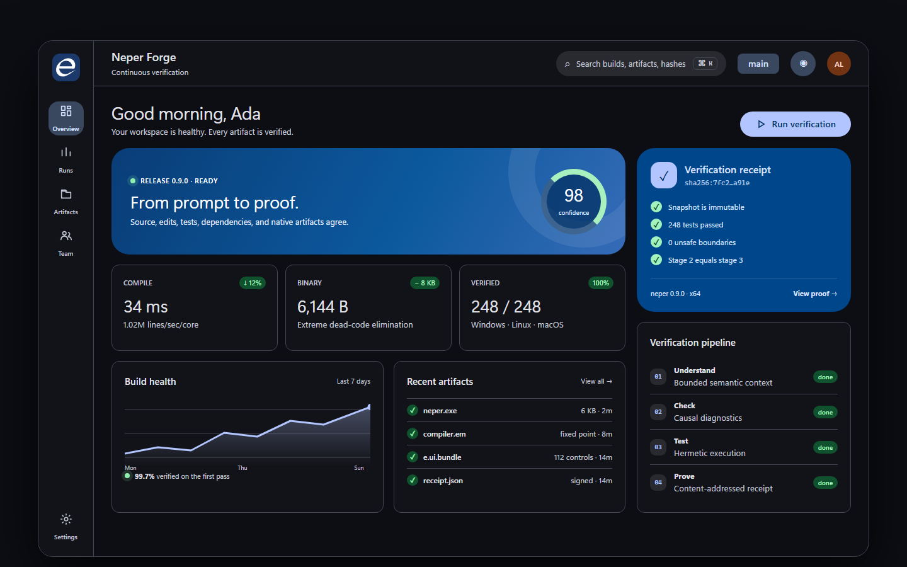

One million lines. Under one second.
A direct emitter, declaration-level incremental work, and no LLVM make 1M+ lines/sec/core the baseline design target—not a stretch goal.
Build deterministic native software for Windows, Linux, macOS, CPU, and GPU. Neper is MIT open source, designed for AI coding agents, and 100% self-hosted—from compiler and linker to its ultra-rich standard library.
use e.io
fn main(args: []str) -> err {
try io.print("Hello, Neper")
ret ok
}
$ neper run hello.e
(32 msec, 3648 bytes)
Hello, NeperSee one agent generate, check, repair, test, and compile a CPU/GPU program without leaving the deterministic Neper toolchain.
Neper is not a familiar language with an AI tool bolted on. Its vocabulary, compiler protocol, library, artifacts, and hardware model are designed as one system for generated software.
A direct emitter, declaration-level incremental work, and no LLVM make 1M+ lines/sec/core the baseline design target—not a stretch goal.
Neper traces every reachable function, type, and constant, then strips everything else. No VM, garbage collector, or LLVM runtime. Ship the program, not the toolchain.
Algorithms, crypto, codecs, compression, data, networking, time, concurrency, UI, ML, and GPU compute—versioned and tested together.
A compact, frozen vocabulary gives every keyword one job. No aliases, overloads, contextual meanings, or macro dialects to make the model guess.
One coherent library surface replaces dependency archaeology. Every module is fenced, fixture-driven, and available to the compiler, the agent, and the reviewer under the same version.
e.algosorting, search, graphs, geometry, hashing, random
e.cryptohashes, signatures, encryption, key derivation, X.509
e.codecJSON, XML, CSV, images, archives, binary formats
e.compressdeflate, gzip, zstd, lz4, brotli, streaming codecs
e.datacollections, tables, schemas, query, validation
e.netHTTP, TLS, DNS, WebSocket, QUIC, MQTT
e.textUnicode, regex, search, diff, templates, locale
e.timecalendars, time zones, schedules, monotonic clocks
e.taskthreads, synchronization, pools, resilience
e.uinative windows, layout, controls, accessibility
e.mllinear algebra, classifiers, clustering, neural nets
e.gpuCPU, Vulkan, CUDA, tensors, images, presentation
A polished verification dashboard showing how navigation, data, actions, status, progress, tables, and responsive surfaces work as one native design system.

A plain Neper function marked @gpu compiles beside its host code. Run the same kernel on the CPU for exact debugging, then launch it through Vulkan or CUDA without changing languages or build systems.
use e.gpu
@gpu(256)
fn saxpy(a: f32, x: []const f32, y: []f32) {
let i = usize(gpu.gid.x)
if i < x.len { y[i] = a*x[i] + y[i] }
}
fn run(q: *gpu.Queue, x: []const f32, y: []f32) -> err {
let dx = try gpu.upload[f32](q, x)
let dy = try gpu.upload[f32](q, y)
try gpu.launch[saxpy](q, gpu.grid1(x.len), 2.0, dx, dy)
try gpu.download(q, dy, y)
ret ok
}
// q may target .Cpu, .Vulkan, or .Cuda“LLM-friendly” is not syntax sugar. Neper reduces uncertainty and token cost across generation, retrieval, editing, compilation, repair, testing, and final verification.
Every source snapshot, semantic edit, dependency, unsafe boundary, test, and native artifact is connected by verifiable hashes.
One content-addressed receipt binds the requested behavior, source snapshot, toolchain, tests, environment, unsafe boundaries, and native artifact.
Why: Trust becomes portable, inspectable evidence.The Neper compiler compiles itself again and reaches a byte-identical fixed point: the compiler verifies the compiler.
Why: The toolchain proves its own consistency.Offline builds, content identities, immutable snapshots, and authenticated caches make repeated results comparable.
Why: Same inputs always produce comparable results.Rename and change plans verify snapshot hashes and unrelated-diff guards before anything is applied.
Why: Stale or partial changes cannot silently land.Parallel agent changes are merged against a shared snapshot, checked for textual and semantic conflicts, then reverified together.
Why: Parallel agents cannot merge incompatible meanings.Stable codes, exact spans, expected and actual types, related causes, and bounded notes explain what failed and why.
Why: Models fix causes instead of chasing symptoms.Typed fixes include confidence, preconditions, and affected spans so an agent can repair without guessing.
Why: Repairs are checked actions, not guesses.The compiler returns the types, effects, ownership, callers, and dependencies needed for one edit—not an entire repository.
Why: Models get truth without repository overload.The grammar, APIs, diagnostics, and capability surface are emitted as compact model context for the selected toolchain.
Why: Documentation cannot drift from the active compiler.One command enumerates every unsafe boundary and escape hatch with its source, reason, and provenance.
Why: Every escape hatch stays visible and auditable.Packages are hash-verified and stored immutably. Installation executes no package code and grants no surprise authority.
Why: Installing dependencies cannot execute hidden code.Every tool, dependency, platform fact, input, and environment condition that can affect a result enters its identity.
Why: Ambient machine state cannot hide inside results.Casts, allocation, ownership, error flow, transfers, and unsafe boundaries are written where they happen.
Why: Critical behavior never depends on invisible inference.Tokens retain exact spans and trivia; the recoverable tree preserves source identity instead of reconstructing it.
Why: Tools edit code without destroying human intent.Tokens, syntax, symbols, references, tests, builds, and results use versioned machine-readable records.
Why: Agents consume facts without parsing prose.Tests, timeouts, structured events, reproducible manifests, and self-host fixed points define an objective stop state.
Why: Work stops only when evidence says done.Incremental builds recheck only affected declarations and explain every keep-or-rebuild decision.
Why: Feedback stays fast as projects grow.Diagnostics in generated files route back to the source span the model should actually change.
Why: Models repair the real editable source.A short, closed vocabulary with no synonyms or contextual meanings keeps generation compact and deterministic.
Why: Fewer meanings reduce generation errors.Each name resolves one way. Calls, operators, protocols, and imports never depend on a hidden candidate set.
Why: Resolution avoids hidden candidate sets.Every top-level declaration begins at column zero with a keyword, and a file path is its module name.
Why: Relevant code is cheap to locate.One formatter produces one layout, shrinking diffs and preventing agents from spending tokens debating style.
Why: Formatting noise disappears from every diff.Neper emits native executables through its own linker without LLVM, a VM, a garbage collector, or a hidden scheduler.
Why: Programs ship without heavyweight runtime baggage.The toolchain explains why code was retained, eliminated, rebuilt, instantiated, or linked instead of hiding those decisions.
Why: Performance decisions remain inspectable and debuggable.Retries cannot turn nondeterminism into a pass. Attempts, seeds, and evidence remain visible as an explicit flaky result.
Why: Nondeterminism cannot masquerade as correctness.Language changes are evaluated against tokenizer cost and verified repair success, making model efficiency an engineering constraint.
Why: Language evolution must justify model cost.